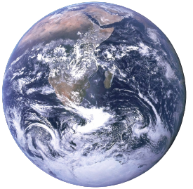
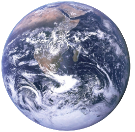
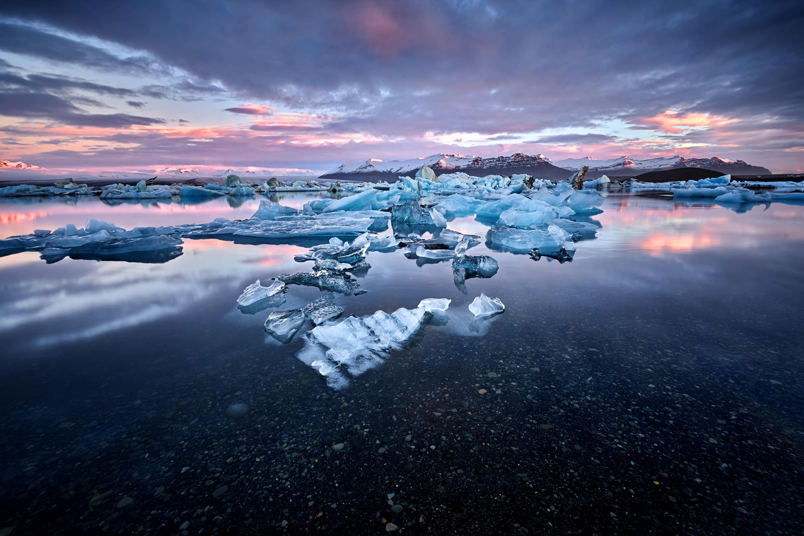
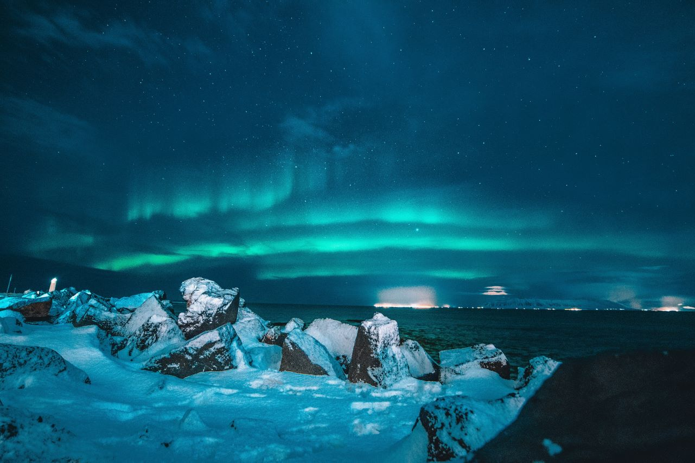

I͠c͠e͠l͠a͠n͠d͠

I͠c͠e͠l͠a͠n͠d͠

Welcome to Iceland
아이슬란드는 국토의 약 79%가 빙하, 호수, 용암지대 등으로 구성되어 있다.
9세기 노르웨이 바이킹들에 의해 세워진 나라 그 때 바이킹들은 통나무 하나를 바다에 띄워
그것이 닿는 곳에 정착하기로 했고, 그곳이 아이슬란드의 수도 레이캬비크이다.
하프나피오르드에서는 용암지대 사이를 돌아다니는 엘프투어도 있습니다.
아이슬란드 엘프 학교인 아울파스콜린(Álfaskólinn)은
레이캬비크에서 엘프 관련 학습과정을 제공하고 수료증도 발급합니다.
✶✧*✦ ⁺✴
✶✧*✦ ⁺✴
You might think that -

is covered with ✦✧
ice
⟶ ⤏ ⟶
여러분은 아이슬란드가 얼음으로 덮여있다고 생각할지도 모릅니다.
Most of the on-location scenes in were filmed on the Svinafellsjokull
Mankind was born on earth, It was never meant to die here
We will find a way, we always have
인터스텔라의 대부분 현장 장면은 아이슬란드의 스비나펠요쿨 빙하 지형에서 촬영되었다